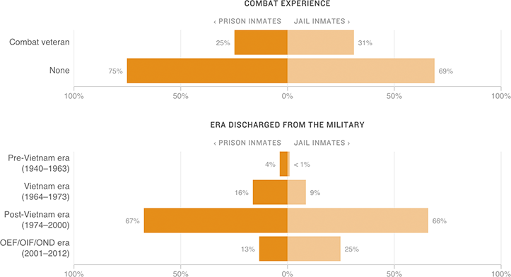

Military Service Of Male Veterans In Prison And Jail (2011-2012)

Notes
— Combat experience was self-reported by inmates.
— Veterans were categorized by era based on their date of last discharge.
— OEF/OIF/OND: Operation Enduring Freedom, Operation Iraqi Freedom and Operation New Dawn